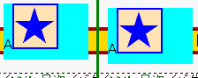
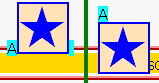

レイヤー（layer要素／ilayer要素／position: absolute; が指定された要素）を表示させたページでは、ウィンドウをリサイズするとレイヤーが当初配置した位置からずれてしまう。
<div style="position:absolute; left:100px; top:10px; background:aqua;"> A<img src="img01.png" usemap="#map1" alt="NN4.x目次へ"> <map name="map1"> <area shape="circle" coords="23,23,22" href="../nn4x.html"> </map> </div>
画像と文字を含むレイヤーを配置しています。
左がリサイズ前、右はリサイズ後のレイヤーです。IEでの表示でもレイヤーがずれていますが、これはbody要素のマージンを％値指定にしているため、ウィンドウのリサイズ時にマージンのサイズも変わってしまったためです。
IE6.0での表示（標準モード）
NN4.78での表示
スレッドでは「クライアントイメージマップを含むレイヤー」にリサイズ時のずれが発生するとありますが、イメージマップが含まれていない場合でもずれは発生します。
以下のいずれかの方法により、この不具合を回避することができます。
<script type="text/javascript">
<!--
var ua = navigator.userAgent;
var NN4 = (ua.indexOf("MSIE")==-1 && ua.indexOf("Mozilla/4")==0)?1:0;
if(NN4) {window.onresize = rebuild;}
function rebuild(){location.reload();};
//-->
</script><body onresize="JavaScript:if (document.layers) location.reload()">
NN4.78では未修正です。